작성자:hyoryeon(2019.11~)
Hello everybody!!

이 사이트는 HTML 기초문법과 웹서버 구축을 공부하기 위해서 만들었습니다.
구축된 내용은 "파이썬 프로그래밍 공부하기"입니다.
- 파이썬 Tool 설치하기
- 숫자형 다루기
- 리스트 다루기
- 반복구조 다루기
- 조건 판단하기
- 조건으로 반복하기
- 튜플과 딕셔너리 활용하기
- 함수 사용하기
<숫자형 다루기>
숫자형
숫자형은 숫자로 이뤄진 자료형을 말합니다.
정수,실수 등의 숫자를 다룰 수 있습니다.
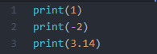
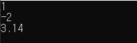
더하기, 빼기,곱하기,나누기
숫자끼리 더하기,빼기,곱하기,나누기와 같은 사칙연산을 할 수 있습니다.
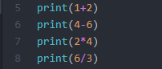
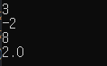
제곱,몫,나머지
**,//,%는 각각 제곱,몫,나머지를 구할 때 사용합니다.
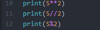
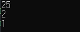
문자열
문자를 나열한 것을 문자열이라고 합니다.
문자열은''또는""로 묶어서 표현합니다.
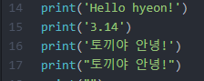
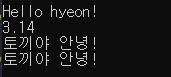
문자열 연산하기
문자열에서 사용할 수 있는 연산자는 +와*입니다.
+는 여러 문자열을 연결하고 *는 문자열을 반복합니다.
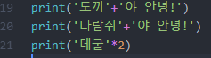
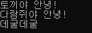
변수
변수는 값을 저장하는 공간입니다.
값을 저장해두고 필요할 때마다 꺼내서 사용할 수 있습니다.
=를 사용해 값을 저장합니다.
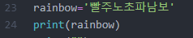
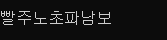
변수라는 이름처럼 변수에 저장된 값은 변할 수 있습니다.
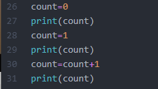
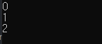
주석
주석은 내용을 설명할 때마다 사용합니다.
#으로 주석 처리를 할 수 있습니다.
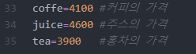